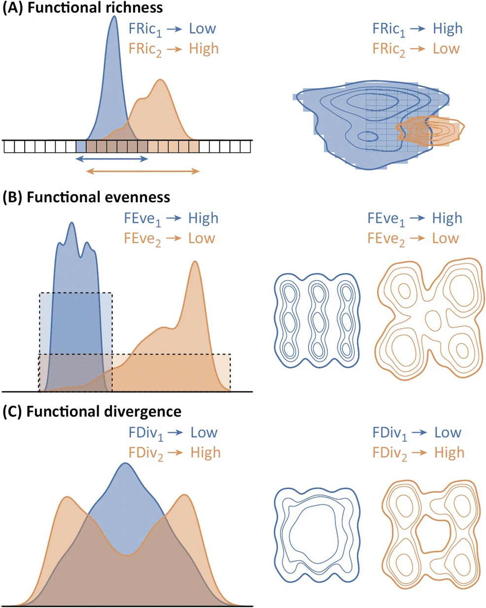
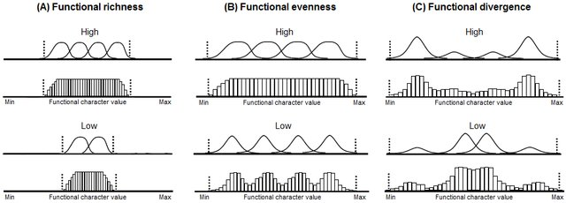
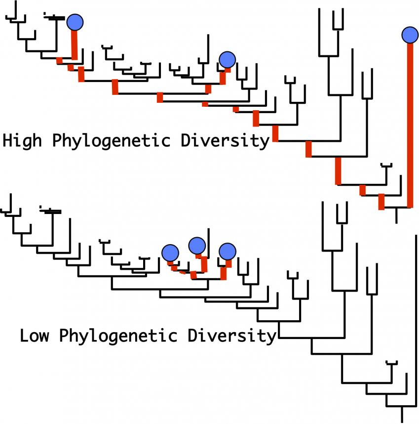

Semana 3: Resumo expandido — Diversidade taxonômica, funcional e filogenética em ecologia de comunidades
Além da equivalência taxonômica: traços funcionais, estrutura filogenética e regras de montagem
1 Introdução: por que ir além da diversidade taxonômica?
A mensuração clássica da biodiversidade local (\(\alpha\)), abordada nos Módulos 1 e 2 por meio da riqueza de espécies (\(S\)), do índice de Shannon-Wiener (\(H'\)), do índice de Simpson (\(1-D\)) e da equitabilidade de Pielou (\(J'\)), fundamenta-se em uma premissa implícita: a equivalência taxonômica. Sob essa abordagem, todas as espécies são tratadas como unidades discretas idênticas e intercambiáveis; uma espécie de árvore emergente de 45 metros de altura possui o mesmo peso conceitual na fórmula de Shannon do que uma pequena erva de sub-bosque de 10 centímetros, desde que apresentem a mesma abundância relativa (\(p_i\)).
Embora essa abstração tenha permitido avanços históricos na ecologia quantitativa ao longo do século XX, ela apresenta limitações severas quando o objetivo é compreender os mecanismos geradores da estrutura das comunidades, a dinâmica de montagem ecológica (community assembly) e os impactos da perda de espécies no funcionamento dos ecossistemas.
Duas comunidades podem apresentar exatamente a mesma riqueza (\(S = 10\)) e os mesmos valores de Shannon e Simpson, mas possuir realidades ecológicas profundamente distintas:
- Cenário A (Alta redundância e dissimilaridade funcional): Uma comunidade composta por dez espécies pertencentes a dez famílias botânicas distantes (ex.: uma palmeira, uma leguminosa fixadora de nitrogênio, uma árvore carnívora, um arbusto esclerófilo, uma trepadeira lenhosa), cada uma desempenhando papéis ecológicos e estratégias de uso de recursos completamente diferentes.
- Cenário B (Baixa diversidade funcional e filogenética): Uma comunidade composta por dez espécies do mesmo gênero (ex.: dez espécies de Piper de sub-bosque), apresentando morfológica e fisiologicamente a mesma altura, tipo foliar e arquitetura radicular.
A perda de cinco espécies no Cenário B pode ter um impacto ecológico reduzido na função do ecossistema devido à alta redundância. Já a perda de cinco espécies no Cenário A pode colapsar redes de polinização, ciclagem de nutrientes e regulação hídrica.
Para superar essa limitação, a ecologia contemporânea incorporou duas dimensões adicionais à biodiversidade: * A dimensão funcional: avalia o que os organismos fazem no ecossistema, quantificando a variação nos seus traços funcionais (functional traits). * A dimensão filogenética: avalia a história evolutiva compartilhada entre os organismos, quantificando o tempo de divergência acumulado na árvore da vida.
2 A dimensão funcional da biodiversidade
2.1 Traços funcionais (functional traits) e as matrizes ecológicas
Um traço funcional (functional trait) é definido como qualquer característica morfológica, fisiológica, fenológica ou comportamental mensurável no nível do indivíduo que afeta indiretamente a sua aptidão (fitness) por meio de seus efeitos sobre a sobrevivência, crescimento e reprodução (Keddy & Laughlin, 2021).
2.1.1 Classificação dos traços funcionais
Os traços funcionais podem ser classificados em duas categorias conceituais primárias:
- Traços de resposta (response traits): características que determinam como uma espécie responde a variações nos fatores ambientais abióticos ou a perturbações (ex.: espessura da casca para resistência ao fogo, densidade do estômato para tolerância à seca, capacidade de aênquima radicular para sobrevivência à anoxia do solo).
- Traços de efeito (effect traits): características que determinam como uma espécie afeta o funcionamento do ecossistema e os fluxos de matéria e energia (ex.: concentração de nitrogênio foliar afetando a taxa de decomposição do serapilheira, arquitetura do sistema radicular afetando a contenção da erosão do solo, tamanho e formato da flor afetando redes de polinizadores).
2.1.2 A estrutura de matrizes na ecologia funcional
A análise quantitativa da diversidade funcional exige a integração de duas matrizes fundamentais:
- Matriz de Abundância (\(\mathbf{L}\) ou \(\mathbf{W}\)): composta por \(N\) locais/amostras nas linhas e \(S\) espécies nas colunas, contendo as abundâncias brutas ou relativas (\(p_{ij}\)) da espécie \(j\) no local \(i\).
- Matriz de Atributos/Traços (\(\mathbf{T}\)): composta por \(S\) espécies nas linhas e \(K\) traços funcionais nas colunas.
MATRIZ DE ABUNDÂNCIA (L) MATRIZ DE TRAÇOS (T)
Esp.1 Esp.2 ... Esp.S Traço.1 Traço.2 ... Traço.K
Sítio 1 [ p11 p12 ... p1S ] Esp.1 [ t11 t12 ... t1K ]
Sítio 2 [ p21 p22 ... p2S ] x Esp.2 [ t21 t22 ... t2K ]
... [ ... ... ... ... ] ... [ ... ... ... ... ]
Sítio N [ pN1 pN2 ... pNS ] Esp.S [ tS1 tS2 ... tSK ]2.2 Média ponderada da comunidade (community-weighted mean — CWM)
A Média Ponderada da Comunidade (\(CWM\)) representa o valor médio do traço funcional de uma comunidade, ponderado pela abundância relativa de cada espécie presente no local. É a métrica mais direta para capturar o traço dominante selecionado pelos filtros ambientais locais.
2.2.1 Formulação matemática do CWM
Para um determinado traço funcional \(k\) no sítio \(i\), o valor de \(CWM_{ik}\) é calculado por:
\[CWM_{ik} = \sum_{j=1}^{S} p_{ij} \cdot t_{jk}\]
Onde: * \(S\) é a riqueza total de espécies presentes no sítio \(i\). * \(p_{ij}\) é a abundância relativa da espécie \(j\) no sítio \(i\) (\(\sum_{j=1}^S p_{ij} = 1\)). * \(t_{jk}\) é o valor do traço funcional \(k\) para a espécie \(j\).
2.2.2 Exemplo numérico detalhado do cálculo do CWM
Considere duas comunidades florestais (Sítio 1 e Sítio 2) onde mediu-se a Área Foliar Específica (\(SLA\), expressa em \(\text{cm}^2 \cdot \text{g}^{-1}\)) de três espécies de árvores: * Espécie A (Pioneira de folha fina): \(SLA = 250\text{ cm}^2/\text{g}\) * Espécie B (Secundária intermediária): \(SLA = 140\text{ cm}^2/\text{g}\) * Espécie C (Tardia de folha coriácea/esclerófila): \(SLA = 60\text{ cm}^2/\text{g}\)
Composição de Abundância: * Sítio 1 (Clareira recente / alta luz): Espécie A (\(p_A = 0,70\)), Espécie B (\(p_B = 0,20\)), Espécie C (\(p_C = 0,10\)). * Sítio 2 (Sub-bosque denso / ambiente sob estresse hídrico): Espécie A (\(p_A = 0,05\)), Espécie B (\(p_B = 0,25\)), Espécie C (\(p_C = 0,70\)).
Cálculo do \(CWM\) para o Sítio 1: \[CWM_{\text{Sítio 1}} = (0,70 \cdot 250) + (0,20 \cdot 140) + (0,10 \cdot 60) = 175 + 28 + 6 = 209\text{ cm}^2/\text{g}\]
Cálculo do \(CWM\) para o Sítio 2: \[CWM_{\text{Sítio 2}} = (0,05 \cdot 250) + (0,25 \cdot 140) + (0,70 \cdot 60) = 12,5 + 35 + 42 = 89,5\text{ cm}^2/\text{g}\]
Interpretação Ecológica: O elevado \(CWM\) do Sítio 1 (\(209\text{ cm}^2/\text{g}\)) reflete uma comunidade dominada por estratégias de rápido retorno de investimento de carbono foliar (Espectro Econômico Foliar — Leaf Economics Spectrum), típica de habitats férteis e luminosos. O baixo \(CWM\) do Sítio 2 (\(89,5\text{ cm}^2/\text{g}\)) evidencia a seleção de folhas duráveis, conservativas e resistentes à desidratação.
2.3 Componentes multidimensionais da diversidade funcional
Embora o \(CWM\) informe a posição média do traço na comunidade, ele não mede a amplitude ou a distribuição das estratégias funcionais no espaço de traços. Para quantificar a estrutura funcional completa, Villéger et al. (2008) e Mason et al. (2005) definiram três componentes complementares no espaço funcional multidimensional (obtido após PCoA ou PCA da matriz de distância de Gower entre traços):

2.3.1 1. Riqueza Funcional (\(FRic\))
- Definição: Representa a quantidade de espaço funcional ocupado pelas espécies presentes na comunidade. Matematicamente, para traços contínuos, é calculada como o volume do envoltório convexo mínimo (convex hull volume) que engloba todas as espécies no espaço de traços.
- Interpretação: Mede o grau de preenchimento ou uso do espaço de recursos total disponível. Um valor baixo de \(FRic\) indica que os recursos utilizados pelas espécies estão restritos a uma pequena faixa do espaço funcional (possível ação de filtro ambiental severo).
- Sensibilidade: \(FRic\) é influenciado pela riqueza taxonômica (\(S\)) e por espécies extremas (outliers funcionais), mas é insensível às abundâncias relativas (\(p_i\)).

2.3.2 2. Uniformidade Funcional (\(FEve\))
- Definição: Quantifica quão regularmente as abundâncias das espécies estão distribuídas ao longo do espaço funcional ocupado, bem como a regularidade das distâncias entre as espécies.
- Formulação: Baseia-se no cálculo do comprimento da Árvore Geradora Mínima (Minimum Spanning Tree — MST) ligando as espécies no espaço de traços e na variação das abundâncias ponderadas ao longo dos ramos.
- Interpretação: \(FEve\) aproxima-se de 1,0 quando as espécies estão uniformemente espaçadas no espaço funcional e possuem abundâncias relativas idênticas. Valores baixos de \(FEve\) indicam que algumas faixas de recursos são subutilizadas ou que a abundância está concentrada de forma irregular em pequenos aglomerados funcionais.
2.3.3 3. Divergência Funcional (\(FDiv\))
- Definição: Quantifica como a abundância das espécies está distribuída dentro do volume funcional ocupado. Especificamente, mede se as espécies mais abundantes estão localizadas próximas ao centro de gravidade do espaço funcional ou nas suas margens/extremidades.
- Interpretação:
- \(FDiv\) alto (próximo de 1,0): significa que as espécies mais abundantes possuem traços extremos, localizando-se distantes do centro da comunidade. Isso indica forte partição de recursos e mitigação da competição interespecífica (limitação de similaridade).
- \(FDiv\) baixo (próximo de 0): significa que as espécies mais abundantes possuem traços intermediários (próximos do centro do envoltório), indicando estabilização em torno de uma estratégia ótima comum.
2.3.4 4. Entropia Quadrática de Rao (\(Rao's\ Q\))
Proposto originalmente pelo estatístico C. R. Rao (1982) e introduzido na ecologia por Botta-Dukát (2005), o índice \(Rao's\ Q\) integra riqueza, abundância relativa e dissimilaridade funcional entre espécies em uma única métrica coerente.
2.3.4.1 Formulação matemática:
\[Q = \sum_{i=1}^{S} \sum_{j=1}^{S} d_{ij} \cdot p_i \cdot p_j\]
Onde: * \(S\) é a riqueza de espécies. * \(p_i\) e \(p_j\) são as abundâncias relativas da espécie \(i\) e da espécie \(j\), respectivamente. * \(d_{ij}\) é a distância ou dissimilaridade funcional entre a espécie \(i\) e a espécie \(j\) (normalmente derivada da distância euclidiana ou distância de Gower padronizada no intervalo \([0, 1]\)).
2.3.4.2 Propriedades de Rao’s Q:
- Se todas as espécies forem funcionalmente idênticas (\(d_{ij} = 0\) para todo \(i, j\)), \(Rao's\ Q\) reduz-se a zero.
- Se \(d_{ij} = 1\) para todo \(i \neq j\) (todas as espécies são maximamente dissimilares), \(Rao's\ Q\) reduz-se exatamente ao Índice de Diversidade de Simpson (\(1 - D = 1 - \sum p_i^2\)).
- Portanto, \(Rao's\ Q\) é a generalização direta do índice de Simpson incorporando a distância funcional entre os táxons.
3 A dimensão filogenética da biodiversidade
A diversidade filogenética quantifica a história evolutiva acumulada por um conjunto de espécies em uma comunidade. Como os traços funcionais são herdados ao longo das linhagens evolutivas, espécies proximamente aparentadas tendem a compartilhar atributos morfológicos e fisiológicos semelhantes — um fenômeno denominado conservadorismo de nicho filogenético (phylogenetic niche conservatism).
3.1 Diversidade filogenética de Faith (\(PD\))
Formulado por Daniel P. Faith (1992), o índice de Diversidade Filogenética (\(PD\)) foi a primeira e continua sendo a métrica filogenética mais utilizada na biologia da conservação.
3.1.1 Formulação matemática:
\[PD = \sum_{b \in T(S)} l_b\]
Onde \(T(S)\) é a sub-%árvore filogenética ligando todas as espécies presentes na comunidade local \(S\) até a raiz comum, e \(l_b\) é o comprimento do ramo \(b\) (expresso em milhões de anos de divergência ou substituições nucleotídicas).
3.1.2 Interpretação ecológica:
\(PD\) mede o total de tempo evolutivo independente representado pelas espécies da comunidade. Se uma comunidade contém táxons de linhagens antigas e divergentes (ex.: uma samambaia, uma conífera e uma angiosperma), o valor de \(PD\) será extremamente alto. Se contiver a mesma riqueza \(S\), mas com espécies pertencentes a um único radiação adaptativa recente (ex.: quatro espécies do gênero Inga), o \(PD\) será baixo.

3.2 Distâncias filogenéticas médias (\(MPD\) e \(MNTD\))
Enquanto o \(PD\) de Faith reflete o comprimento total de ramos e é altamente correlacionado com a riqueza \(S\), as métricas de distância pairwise desenvolvidas por Webb et al. (2002) medem a estrutura de parentesco interna da comunidade.
3.2.1 1. Média das Distâncias Filogenéticas (\(MPD\))
A Distância Filogenética Média (\(Mean\ Phylogenetic\ Distance\) — \(MPD\)) calcula a média das distâncias na árvore filogenética entre todos os pares possíveis de espécies na comunidade.
\[\text{MPD} = \frac{\sum_{i=1}^{S} \sum_{j \neq i}^{S} d_{ij}}{S(S-1)}\]
Quando ponderada pelas abundâncias relativas (\(MPD_{obs}\)):
\[\text{MPD}_{\text{ponderado}} = \frac{\sum_{i=1}^{S} \sum_{j \neq i}^{S} d_{ij} \cdot p_i \cdot p_j}{\sum_{i=1}^{S} \sum_{j \neq i}^{S} p_i \cdot p_j}\]
- O que mede: Captura a estrutura filogenética geral e profunda da comunidade (ao longo da árvore inteira).
3.2.2 2. Média das Distâncias com o Vizinho Mais Próximo (\(MNTD\))
A Distância Filogenética do Vizinho Mais Próximo (\(Mean\ Nearest\ Taxon\ Distance\) — \(MNTD\)) calcula a média das distâncias entre cada espécie e a sua espécie filogeneticamente mais próxima na comunidade.
\[\text{MNTD} = \frac{\sum_{i=1}^{S} \min(d_{ij})}{S} \quad (j \neq i)\]
- O que mede: Captura a estrutura filogenética fina e terminal (nas pontas da árvore), sendo extremamente sensível à presença de espécies congenéricas coocorrentes.
3.3 Índices padronizados via modelos nulos (\(NRI\) e \(NTI\))
Como os valores brutos de \(MPD\) e \(MNTD\) dependem diretamente do número de espécies (\(S\)) presentes na amostra, Webb (2000) desenvolveu dois índices padronizados pelo tamanho da amostra utilizando modelos nulos de aleatorização:
3.3.2 2. Nearest Taxon Index (\(NTI\))
\[NTI = -1 \cdot \frac{MNTD_{\text{observado}} - \text{média}(MNTD_{\text{nulo}})}{\text{desvio\_padrão}(MNTD_{\text{nulo}})}\]
3.3.3 Interpretação dos valores de \(NRI\) e \(NTI\):
- Valores estatisticamente positivos (\(NRI > +1,96\) ou \(NTI > +1,96\); \(p < 0,05\)):
- As espécies da comunidade são mais proximamente aparentadas entre si do que o esperado ao acaso a partir do pool regional.
- Padrão: Agrupamento Filogenético (Phylogenetic Clustering).
- Valores estatisticamente negativos (\(NRI < -1,96\) ou \(NTI < -1,96\); \(p > 0,95\)):
- As espécies da comunidade são menos aparentadas (mais distantes) entre si do que o esperado ao acaso.
- Padrão: Superdispersão Filogenética (Phylogenetic Overdispersion).
- Valores próximos de zero (entre \(-1,96\) e \(+1,96\)):
- A estrutura filogenética da comunidade não difere de uma montagem estocástica aleatória.
4 Regras de montagem e o teste de hipóteses ecológicas
A integração entre traços funcionais e filogenia permite testar diretamente os mecanismos que regem a montagem das comunidades ecológicas (community assembly rules), conforme sintetizado por Keddy & Laughlin (2021) e Webb et al. (2002):
+-------------------------------------------------------------------------+
| SINTESE DAS REGRAS DE MONTAGEM E PADRÕES |
+-------------------------------------------------------------------------+
| |
| MECANISMO PREDOMINANTE ESTRUTURA FUNCIONAL ESTRUTURA FILOGENÉTICA
| ---------------------- ------------------- ---------------------
| |
| 1. FILTRO ABIÓTICO SEVERO CONVERGÊNCIA AGRUPAMENTO |
| (Seca, geada, solo tóxico) (Trait Underdispersion) (Phylogenetic |
| Clustering: NRI > 0)
| |
| 2. COMPETIÇÃO INTERESPECÍFICA / DIVERGÊNCIA SUPERDISPERSÃO |
| LIMITAÇÃO DE SIMILARIDADE (Trait Overdispersion) (Phylogenetic |
| Overdispersion: |
| NRI < 0) |
| |
+-------------------------------------------------------------------------+4.1 1. Filtros abióticos e convergência funcional
Quando o ambiente físico impõe restrições fisiológicas severas (ex.: solos alagados com anoxia, geadas recorrentes ou secas prolongadas), apenas espécies que possuem um conjunto específico de traços adaptativos conseguem colonizar o local. * Resultado Funcional: Convergência funcional (trait underdispersion / subdispersão). As espécies locais apresentam traços altamente similares e baixos valores de \(FRic\) e \(Rao's\ Q\). * Resultado Filogenético: Se os traços adaptativos forem conservados evolutivamente (o que é comum em plantas e animais), o filtro abiótico selecionará linhagens aparentadas, resultando em Agrupamento Filogenético (\(NRI > 0\)).
4.2 2. Competição interespecífica e limitação de similaridade
Em ambientes produtivos e benignos, onde os filtros abióticos são brandos, a competição por recursos limitantes torna-se o processo estruturante dominante. * Resultado Funcional: Pela Lei da Exclusão Competitiva e pelo princípio da limitação de similaridade, espécies funcionalmente idênticas não conseguem coexistir no mesmo nicho local. A seleção favorece a diferenciação funcional (trait overdispersion / superdispersão), elevando \(FDiv\) e \(Rao's\ Q\). * Resultado Filogenético: Se os traços forem conservados, espécies muito aparentadas competirão mais intensamente e se excluirão mutuamente, resultando em Superdispersão Filogenética (\(NRI < 0\)).
5 Referências bibliográficas
- BEGON, M.; TOWNSEND, C. R.; HARPER, J. L. Ecologia: de Indivíduos a Ecossistemas. 4ª ed. Porto Alegre: Artmed, 2007.
- BOTTA-DUKÁT, Z. Rao’s quadratic entropy as a measure of functional diversity based on multiple traits. Journal of Vegetation Science, v. 16, n. 5, p. 533-540, 2005.
- DA SILVA, F. R. et al. Análises Ecológicas no R. Recife: Nupeea, 2022.
- FAITH, D. P. Conservation evaluation and phylogenetic diversity. Biological Conservation, v. 61, n. 1, p. 1-10, 1992.
- KEDDY, P. A.; LAUGHLIN, D. C. A Framework for Community Ecology: Species Pools, Filters and Traits. Cambridge: Cambridge University Press, 2021.
- MASON, N. W. H. et al. Functional richness, functional evenness and functional divergence: the primary components of functional diversity. Oikos, v. 111, n. 1, p. 112-118, 2005.
- RAO, C. R. Diversity and dissimilarity coefficients: a unified approach. Theoretical Population Biology, v. 21, n. 1, p. 24-43, 1982.
- RICKLEFS, R. E.; RELYEA, R. A Economia da Natureza. 7ª ed. Rio de Janeiro: Guanabara Koogan, 2016.
- VILLÉGER, S.; MASON, N. W. H.; MOUILLOT, D. New multidimensional functional diversity indices for a multifaceted framework in functional ecology. Ecology, v. 89, n. 8, p. 2290-2301, 2008.
- WEBB, C. O. et al. Phylogenies and community ecology. Annual Review of Ecology and Systematics, v. 33, p. 475-505, 2002.